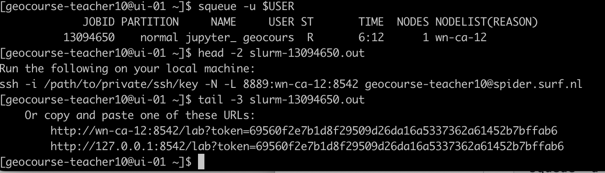

Scaling on HPC/HTC#
Anne Fouilloux, Simula Research Laboratory (Norway), @annefou
Francesco Nattino, Netherlands eScience Center (Netherlands), @fnattino
Meiert W. Grootes, Netherlands eScience Center (Netherlands), @meiertgrootes
Ou Ku, Netherlands eScience Center (Netherlands), @rogerkuou
Tina Odaka, Ifremer (France), @tinaok
- This episode has been developed in collaboration with SURF and the eScience Center (Nederlands) and is based on the work done by the eScience Center. Their documentation can be found at https://github.com/RS-DAT/JupyterDaskOnSLURM/blob/main/user-guide.md#container-wrapper-for-spider-system. The scripts we used in this tutorial are also developed by the eScience Center (Francesco Nattino, Meiert W. Grootes, and Ou Ku), and copied on the shared project folder during the Geo Open Hack Pangeo tutorial. If you are interested in using this approach at SURF for your own work, we suggest you follow the documentation.
For this section, you need to have an account on Spider from SURF. We are using Apptainer and for the training, we will be using an image with less Python packages (sufficient for executing all the notebooks from the tutorial).
Container wrapper for Spider system#
On Spider, using conda environments will lead to performance issues, due to conda’s nature of many small files. In such cases, one can containerize the conda environment. One way to do this is to use the hpc-container-wrapper tool. This is a container wrapper tool developed by Finnish IT center for science (CSC).
Launch JupyterLab and use dask on Spider#
Set up#
First, login to spider:
ssh -Y2C -i $HOME/.ssh/id_rsa $USER@spider.surfsara.nl
We prepared the dask configuration file for spider that you need to copy:
cd $HOME
mkdir -p ~/.config/dask
cp /project/geocourse/Software/pangeo/config_dask_geohack.yml ~/.config/dask/config.yml
Then copy the batch job we prepared to submit on spider and start jupyterLab:
mkdir -p ~/scripts
cp /project/geocourse/Software/pangeo/JupyterDaskOnSLURM/scripts/jupyter_dask_spider_container.bsh $HOME/scripts/.
Submit job to start jupyterLab#
Whenever you want to start a JupyterLab, you would need to submit jupyter_dask_spider_container.bsh:
sbatch scripts/jupyter_dask_spider_container.bsh
Open jupyterLab from your local computer#
Open another terminal on your computer and from your local terminal. The job you submitted should be running. You can check it using the following command:
squeue -u $USER
Then check the slurm output,

You should have something like:
ssh -i /path/to/private/ssh/key -N -L 8889:wn-ca-03:9300 geocourse-teacher09@spider.surf.nl
Copy/paste the command given in your slurm output but update the path to the ssh key you are using to login to spider (e.g. /home/annef/.ssh/id_rsa).
If you copy the command above, make sure to change the username
geocourse-teacher09to your username on spider.Open your browser and paste
http://localhost:8889/to get your JupyterLab session.
Shutting down#
From the Dask tab in the Jupyter interface, click “shutdown” on a running cluster instance to kill all workers and the scheduler (a new cluster based on the default configurations can be re-created by pressing the “+” button).
From the Jupyter interface, select “File > Shutdown” to stop the Jupyter server and release resources.
If the job running the Jupyter server and the Dask scheduler is killed, the Dask workers will also be killed shortly after (configure this using the death-timeout key in the config file).
However, you can use squeue - u $USER command to check all your jobs (including all the jobs related to dask) are stopped. Cancel any remaining jobs!
JOBID PARTITION NAME USER ST TIME NODES NODELIST(REASON)
13091627 normal dask-wor geocours R 1:37 1 wn-ca-09
13091628 normal dask-wor geocours R 1:37 1 wn-dc-12
13091629 normal dask-wor geocours R 1:37 1 wn-ca-07
13091630 normal dask-wor geocours R 1:37 1 wn-ca-07
Create your own image#
Follow these steps if you want to know more and create your own image.
To set up the container wrapper, first log in to Spider. Then, clone the JupyterDaskOnSLURM repository:
git clone http://github.com/RS-DAT/JupyterDaskOnSLURM.git
Then, clone both the hpc-container-wrapper repository:
git clone https://github.com/CSCfi/hpc-container-wrapper.git
Then, copy the container config file spider.yaml file from the
JupyterDaskOnSLURM to the .config file in hpc-container-wrapper:
cp ./JupyterDaskOnSLURM/config/container/spider.yaml ./hpc-container-wrapper/configs/
Change to the hpc-container-wrapper directory and run the
install.sh script to install the container wrapper:
cd hpc-container-wrapper
bash install.sh spider
Next, copy the environment.yaml file from the JupyterDaskOnSLURM
to the current directory and create a container. In the following example, we
create a container under jupyter_dask directory:
mkdir -p ./jupyter_dask
cp ../JupyterDaskOnSLURM/environment.yaml .
bin/conda-containerize new --prefix ./jupyter_dask ./environment.yaml
At the end of the installation, the tool will print the path to the executable
directory (bin directory) of the container. For example:
export PATH="/absolute/path/to/the/container/bin:$PATH"
cd ..
mkdir -p ~/.config/dask
cp JupyterDaskOnSLURM/config/dask/config_spider.yml ~/.config/dask/config.yml
Then add the following lines to the ~/.config/dask/config.yml file, under the
slurm section of jobqueue section, note that you need to replace the export PATH part with the output from the container creation step:
job_script_prologue:
- 'export PATH="/absolute/path/to/the/container/bin:$PATH"' # Export environment path to
python: python
After adding the lines, the ~/.config/dask/config.yml file should look like this:
distributed:
... Some other configurations ...
labextension:
... Some other configurations ...
jobqueue:
slurm:
... Some other configurations ...
job_script_prologue:
- 'export PATH="/home/caroline-oku/caroline/Public/demo_mobyle/container_wrapper/hpc-container-wrapper/tmp/bin:$PATH"'
python: python
Then also configure the SLURM job file
JupyterDaskOnSLURM/scripts/jupyter_dask_spider_container.bsh. Then replace the
following part with the PATH exportaion from the container creation step:
# CHANGE THIS TO THE ABSOLUTE PATH TO THE CONTAINER BIN
export PATH="/absolute/path/to/the/container/bin:$PATH"
Now you have reached the exit point of the deployment script! The Jupyter Server
with Dask plugin can now be started using the
jupyter_dask_spider_container.bsh script.
sbatch JupyterDaskOnSLURM/scripts/jupyter_dask_spider_container.bsh
After the job starts, there will be an example ssh command printed in the job stdout (file slurm-<JOB_ID>.out). It should look like:
ssh -i /path/to/private/ssh/key -N -L 8889:NODE:8888 USER@sssssss.surf.nl
You can execute this command in a new terminal window on your local machine
(modify the path to the private key). You can now access the Jupyter session
from your browser at localhost:8889.
- Make sure you have path to conda by updating your .bashrc
- install micromamba with follwoing commad;
cd $HOME mkdir bin micromamba cd bin "/bin/bash" <(curl -L micro.mamba.pm/install.sh) - Install pangeo enviroment with follwoing commad;
wget https://raw.githubusercontent.com/pangeo-data/pangeo-docker-images/master/pangeo-notebook/environment.yml micromamba create -n pangeo-notebook -f environment.yml micromamba activate pangeo-notebook micromamba install dask-jobqueue - Install jupyter-forward on your PC;
pip install jupyter-forward # in case of spider you can use patched version here; #pip install git+https://github.com/tinaok/jupyter-forward@spider # but you are not recommended to use the conda jupyter-forward --port 9999 --conda-env "/home/geocourse-teacher10/y/envs/pangeo" --shell bash --port-forwarding -c "sbatch -N 1 -c 1 -p normal " spider
Then you will have your jupyter lab pops up on your local PC but can use resources from your compute node! - To use Dask, you need to configure dask jobqueue for your HPC scheduler; Try to contact your HPC administrator for hte best practice on configuring your ~/.config/dask/config.yml. If you want to simplify the configuration for your HPC center, plz contact us for participating dask-hpcconfig project!! https://github.com/umr-lops/dask-hpcconfig